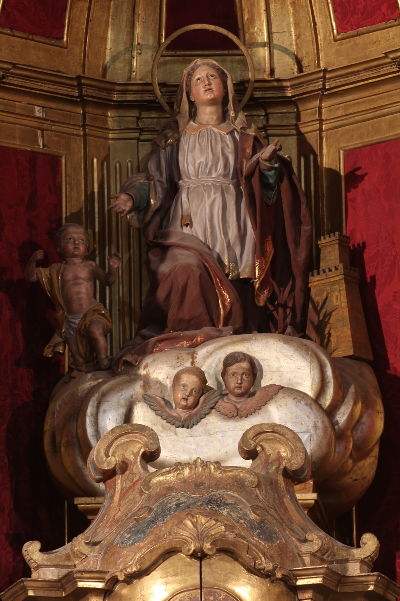

Santa Bàrbara de Nicomèdia (s. III) era la filla d’un home molt ric que la tancà en una torre per preservar-la del contacte amb el món fins que es casàs. Però ella, en secret, es va fer cristiana i consagrà la seva virginitat a Déu. En assabentar-se’n, son pare volgué matar-la, però miraculosament la torre s’obrí i pogué fugir. Finalment fou atrapada i torturada per ordre de son pare perquè renegàs de la fe cristiana i, com que no ho aconseguiren, el seu propi pare la decapità. Com a càstig diví, quan aquest tornava a casa seva, un llamp, precedit d’un gran tro, el matà. Per aquest motiu, santa Bàrbara és a qui invocam contra els trons i els llamps.
En aquesta escultura del segle XVIII, finançada pel batlle Guillem Mayol, l’acompanya un dels seus atributs més característics: la torre amb tres finestres on segons la tradició va ser tancada per son pare. El llamp clavat en terra ens recorda el que matà a son pare.